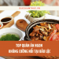

Có rất nhiều lý do để "phải lòng" Đà Lạt; một trong những yếu tố nổi bật nhất chính là những món ăn Đà Lạt ngon - bổ - rẻ khó chối từ.
-
Bánh Ướt Lòng Gà Đà Lạt
Bạn cho rằng bánh ướt và lòng gà chẳng liên quan gì với nhau? Nhầm to rồi nhé! Với sự sáng tạo của người dân Đà Lạt, sự kết hợp của hai món ănnày lại trở nên hợp lý hơn bao giờ hết. Vị dẻo mềm của bánh ướt cùng thịt gà thơm ngon, kèm thêm nước mắm pha, rau thơm, giá hành khiến người ăn phải gật gù, tấm tắc khen ngon. Đây là món ăn Đà Lạt đặc sắc mà bạn nhất định phải thử ít nhất một lần trong đời.
Nơi ăn bánh ướt lòng gà ngon ở Đà Lạt:
- Quán Trang: 15F Tăng Bạt Hổ
- Quán Long: Hẻm 202, lô A16, KQH Phan Đình Phùng
- Quán Hằng 68: 68 Phan Đình Phùng
-
Bánh Căn Đà Lạt
Đến với thành phố sương mù, những món ăn Đà Lạt nóng hổi, bày bán trong không gian nhỏ như bánh căn luôn được ưa chuộng. Chỉ cần cắn một miếng là cảm nhận được vỏ bánh giòn, nhân trứng thơm nồng ăn cùng nước mắm hành, xíu mại tan dần trong miệng. Cảm giác phải nói là... mê ly trong thời tiết lành lạnh luôn. Món ăn Đà Lạt này rất phù hợp để ăn sáng hoặc ăn bữa xế.
Địa chỉ ăn bánh căn ngon tại Đà Lạt:
- Bánh Căn Lệ: 27/44 Yersin, phường 10
- Bánh Căn Nhà Chung: 13 Nhà Chung
- Bánh Căn Dốc Nhà Làng: 15A Nguyễn Biểu, phường 1
-
Nem Nướng Đà Lạt
Nem nướng là cái tên nổi bật trong danh sách những món ăn Đà Lạt phải thử khi đi du lịch. Điều đặc biệt làm nên thương hiệu của món này chính là nước chấm được pha chế theo cách riêng. Nem được làm từ nguyên liệu chính là thịt heo ở phần nạc vai, ít mỡ và nướng trên bếp than hồng. Nghe thì đơn giản nhưng đối với người sành ăn, món đặc sản Đà Lạt này nhất định phải có “bí kíp” riêng thì mới tạo được hương vị đặc sắc đến vậy.
Địa chỉ bán nem nướng ngon:
- Quán Bà Hùng: 328 Phan Đình Phùng
- Quán Bà Nghĩa: 45 Bùi Thị Xuân, phường 2
- Quán Hùng Vân: 150 Bùi Thị Xuân, phường 2
-
Bánh Tráng Nướng Đà Lạt
Bánh tráng nướng là món ăn vặt phổ biến mà bất kỳ ai đặt chân đến thành phố hoa cũng từng thử qua. Bánh tráng được nướng trên than đến khi giòn rụm, "tô điểm" thêm với đủ loại nguyên liệu như trứng đánh, hành lá, tóp mỡ, tôm khô.... Nhiều du khách nước ngoài còn đùa nhau rằng món ăn Đà Lạt này giống như “bánh pizza kiểu Việt Nam”. Trong tiết trời se lạnh, bước chân vào bất kỳ quán bánh tráng nướng nào cũng khiến bạn "ấm lòng" theo cả nghĩa đen lẫn nghĩa bóng.
Địa điểm ăn bánh tráng nướng Đà Lạt:
- Bánh tráng nướng Dì Đinh: 26 Hoàng Diệu, phường 5
- Bánh tráng nướng 61: 61 Nguyễn Văn Trỗi
- Bánh tráng nướng Bùi Thị Xuân: 180 Bùi Thị Xuân
-
Ốc Bươu Nhồi Thịt Đà Lạt
Đặc sản Đà Lạt nổi tiếng đa phần là những món nóng hổi “vừa thổi vừa ăn”; ốc bươu nhồi thịt là món ăn vặt ưa thích của cả người dân địa phương lẫn du khách. Ốc bươu được làm sạch, khử mùi tanh, được nhồi thịt heo xay nhuyễn tẩm gia vị vừa ăn, thêm vài cọng xả dậy mùi thơm rồi đem hấp. Thịt ốc luộc thơm lừng, dai dài, hòa cùng mùi sả đậm đà và nước chấm chua ngọt đích thị là "mỹ thực". Một quán ốc bươu nhồi thịt có thể làm thơm phức cả một góc phố.
Địa điểm ăn ốc bươu nhồi thịt ngon:
- Quán ốc nhồi thịt: 33 Hai Bà Trưng, phường 6
- Quán ốc nhồi thịt: số 4D – 41 Hai Bà Trưng
- Chợ đêm Đà Lạt: đường Nguyễn Thị Minh Khai
-
Lẩu Bò Tơ Atiso Đà Lạt
Lẩu bò không phải món ăn xa lạ đối với thực khách gần xa. Thế nhưng phiên bản lẩu bò được biến tấu khi nấu cùng lá atiso lại khiến món ăn dân dã này trở nên đặc biệt hơn hẳn. Vẫn với nguyên liệu chính là thịt bò, nhưng nước lẩu được nấu thêm cùng với lá atiso trở nên thanh hơn, ngọt hơn rất nhiều. Hãy tự mình trải nghiệm nghe.
Địa chỉ ăn lẩu bò atiso Đà Lạt:
- Quán Xưa: 427/3 Phan Đình Phùng
- Top 30 Quán cafe ở Đà Lạt đẹp dành cho team theo hệ ‘sống ảo’
- 15 món ăn sáng Đà Lạt ngon giá rẻ ”kèm địa chỉ cụ thể”
-  TOP 20 Món ngon Bảo Lộc NGON không cưỡng nổi
-

TOP 79 Món Ngon Đà Lạt NỔI TIẾNG
ĂN GÌ ĐÀ LẠT
- Amazing Coffee Đà Lạt
- Dalat Gold Cafe
- Café Lặng Art
- Woodstock Cafe Bùi Thị Xuân
- The Leaf Coffee
- Cacaoken Coffee
- Tiệm cà phê cô Bông
- Triệu Đóa Hồng
- Bach Du Tea & Coffee house
- Cafe Vườn Yên – Quán cafe chill đẹp
- Cafe Đà Lạt NightBlue Dream Bread
- Hai Ả – Homestay, Cafe & Bakery
- Cafe Đà Lạt Night
TOP QUÁN CAFE ẤN TƯỢNG:
| ✅ Quán ăn Túy Tửu Lầu | ⭐ Địa chỉ: số 9 Thủ Khoa Huân, P1, Tp Đà Lạt | 9h30 – 22h00 |
| ✅ Bánh Căn Lệ | ⭐ Địa chỉ: 44 Yersin, P10. Tp. Đà Lạt | 6h30 – 18h00 |
| ✅ Quán ăn Tê Mồi – Tê bia tựa mồi | ⭐ Địa chỉ: 3 bis, Đống Đa, P3, Tp. Đà Lạt | 8h00 – 22h00 |
| ✅ Quán Lẩu cá tầm Ngư Sơn | ⭐ Địa Chỉ: 33/15/3 Hẻm 33 Phan Đình Phùng, P1, Tp. Đà Lạt | 9h00 – 22h00 |
| ✅ Quán Phở thố Chu Gia | ⭐ Địa Chỉ: 1 bis Phan Đình Phùng, P1, Tp Đà Lạt | 6h30 – 21h00 |
| ✅ Nhà hàng Memory Đà Lạt | ⭐ Địa chỉ: 24B Hùng Vương, P10, Tp Đà Lạt | 7h00 – 22h00 |